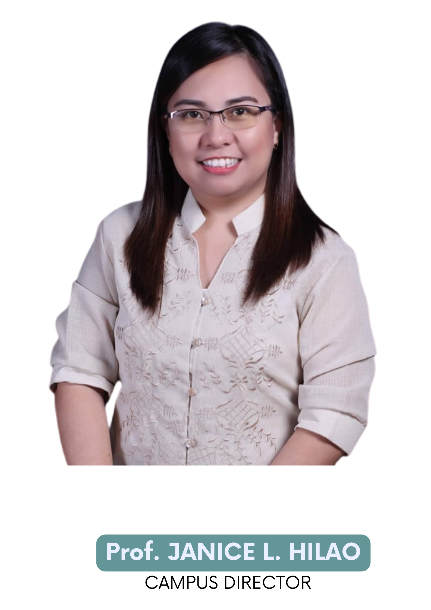
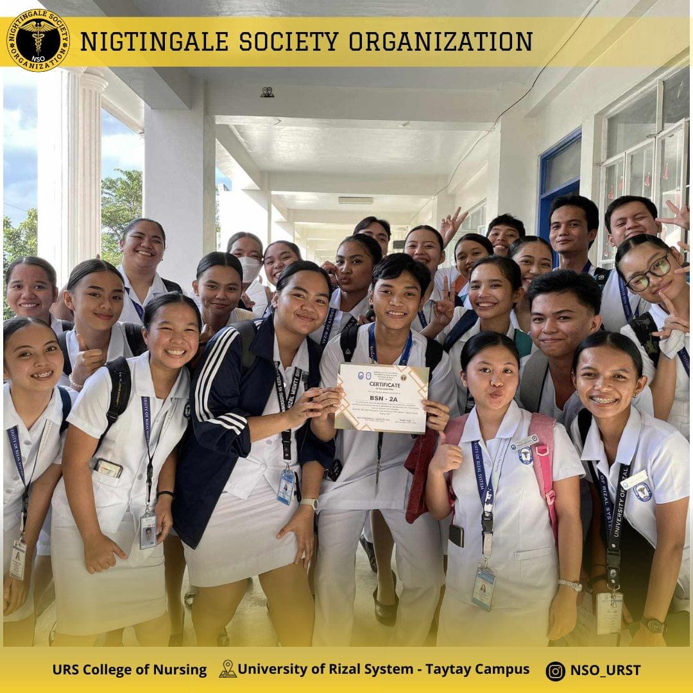
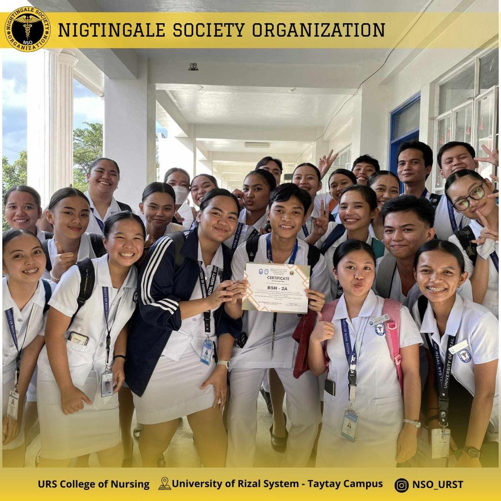

URS TAYTAY ORGANIZATIONAL CHART


- Prof. janice l. hilao
campus director


URS TAYTAY ORGANIZATIONAL CHART (Non-Teaching)


OFFICES
GUIDANCE OFFICE
FACULTY ROOM
HRMO

MEDICAL UNIT
GAD / OPA / PARC
ACCREDITATION
ROOM
NSTP / ADMISSION
SCHOLARSHIP
OFFICE
SCIENCE
LABORATORY
Courses Offered
URS TAYTAY
ORGANIZATIONS
Building Innovation and Technology Society
Building Innovation and Technology Society (BITS) is one of the organizations in the University of Rizal System - Taytay Campus. Our organization provides technical services in different programs or events helds in our campus. We also conduct different activities that use technology such as Technolympics which consist of different contests or tournaments. In this organization, we want to shape great leaders, innovators and tech savvy future educators.

FES Organization
The Future Educators' Society is the highest organization of the College of Education at the University of Rizal System - Taytay Campus. It was established by Professor Carlota C. Estrada and Professor Ma. Caren G. Ulang. As of today, the Future Educators' Society is composed of 14 officers, more than 300 members, and their Adviser, the Campus Director, Professor Janice L. Hilao.
Kinesthetic Dance Trope
Kinesthetic Dance Troupe Organization strengthens the skills and ability of each members in dancing, enhances personal and professional skills in the area of leadership development and as well as molding them to gain courage, self-confidence, hard work and patience.
MUSICA
The MELODIOUS UNION OF SINGERS INCLINED TO CULTURE AND ARTS (M.U.S.I.C.A.) is an accredited organization for the whole studentries of University of Rizal System - Taytay Campus. A known musical choral group in URS Taytay and is a vocal ensemble of students that come together to create beautiful melodies through vocal performances. MUSICA aims to improve each member's singing abilities, as well as their professional and personal leadership development capabilities. It also aspires to shape members' courage, self-assurance, perseverance, and hard work.
 

Nightingale Society Organization
The Nightingale Society Organization, the highest governing body of the College of Nursing which encompasses two programs such as Bachelor of Science in Nursing and Bachelor of Science in Psychology, is a school organization dedicated to fostering a supportive and empowering environment. Inspired by Florence Nightingale's legacy, it focuses on promoting compassion, leadership, and excellence in both academic and extracurricular pursuits.
PLUMA Publication
Pluma is the URS-Taytay publication organization, serves as the newsline of timely updates and news reports within the campus. We believe that keeping students informed on the latest events, successes and accomplishments is a priority of its efforts to deliver information rapidly and reliably — with a focus on accuracy and efficiency, ensures that the pulse of college life is captured and disseminated as quickly as possible in order to foster an informed and connected school community.
Rocksalt Organization
Rocksalt organization (we are the salt and light of the campus) is a god-centered organization which focuses Relationship with god, which means by praise and worship, word of gospel, and sharing life experience with god. Rocksalt organization has many activities for a whole semester. We have prayer chain, which we encourage Everyone to join us worship our dear lord. Lastly, small events that we will be having on the future.
Rotaract Organization
Rotary members aim to acknowledge the positive impact made by youth and young adults in the field of Youth Service. They are committed to empowering these individuals to actively participate in community and international service, develop leadership skills, and foster global understanding for world peace. Moreover, they encourage students and young professionals to engage in service initiatives that address local and global challenges, expand professional networks, exchange ideas with leaders, and cultivate lifelong friendships worldwide. The focus is on developing skills for leadership on both community and global levels while emphasizing the significance of Service Above Self.
Student Science Society (SSS)
The Student Science Society (SSS) is one of the organization in URS Taytay. SSS is dedicated to fostering a passion for scientific inquiry and collaboration among students. Our organization strives to create a dynamic platform where students can engage in hands-on projects across various scientific disciplines. Our primary objective is to cultivate a supportive community that encourages curiosity and the pursuit of knowledge. Through projects and seminars we aim to empower students to explore the wonders of science and develop essential skills for future academic and professional endeavors.
University Supreme Student Government
University Supreme Student Government (USSG) is the highest governing student body among the curricular and non-curricular organization in the University of Rizal System - Taytay Campus. We handle major decision-making, represents student interests to the administration, organizes events, and oversees other student councils or committees. Our role is to enhance the overall student experience and address key issues within the campus community.

VOICES Organization
The Verbally Outstanding, Impregnable, and Competent English Students (VOICES) Society, aims to uplift the English Proficiency of the students, to enhance the speaking skills of URST students, and have representative to literature competitions as the work demands for the advancements of its members.